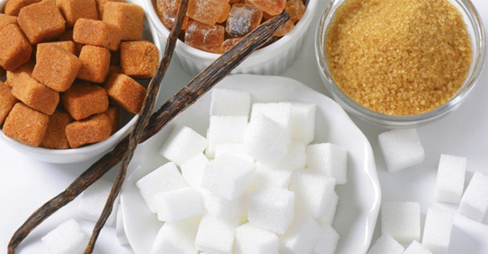

TOP 6 thực phẩm có thể gây ung thư cao và nhanh một cách kinh hoàng
Ung thư là một trong những căn bệnh đáng sợ nhất đối với loài người và thực phẩm mà chúng ta ăn hàng ngày chính là nguồn gây ung thư đứng vị trí đầu bảng. Vậy loại thực phẩm nào bạn cần phải tránh xa, nếu như không muốn tăng nguy cơ đối diện với căn bệnh tử thần này, hãy đọc bài viết dưới đây bạn nhé!1. Bắp rang bơ
Chỉ cần bỏ quay trong lò vi sóng, chỉ vài chục giây bạn đã có một túi bắp rang bơ thơm ngon, béo ngậy cho bữa ăn nhẹ. Tuy nhiên, bạn có biết rằng mình đang đẩy bản thân vào nguy cơ mắc một trong những loại ung thư gan, ung thư tuyến tụy và ung thư tinh hoàn. Các túi bắp rang bơ được quay trong lò vi sóng được lót bằng hóa chất gây ung thư, nhờ đó tạo ra hương vị bơ nhân tạo. Nếu không thể từ bỏ món bỏng ngô, hãy làm nó theo cách truyền thống bạn nhé!
2. Khoai Tây Chiên
Ngoài chất chuyển hóa, khoai tây chiên và các loại thực phẩm chế biến sẵn khác còn chứa rất nhiều carbohydrates, chất bảo quản, muối, chất tạo màu và hương vị. Khi chiên ở nhiệt độ cao sẽ hình thành nên các chất ung thư như acrylamide và đây chính là nguyên nhân hàng đầu gây ra các ca mắc bệnh ung thư ở Mỹ.
3. Đường tinh luyện
Những chiếc bánh thơm lừng được làm bằng bột và đường tinh luyện không chỉ làm tăng nguy cơ sâu răng và tăng cân mà còn có thể gây ra nhiều dạng ung thư cho con người như ung thư vú, tiền liệt, bàng quang, tuyến tụy và trực tràng. Vì vậy, mỗi khi cầm chiếc bánh trên tay và định thưởng thức thì hãy nghĩ lại bạn nhé!
4. Soda
Một ly soda mát lạnh trong những ngày nóng bức là niềm mơ ước của rất nhiều người, tuy nhiên loại nước uống tưởng ngon lại đẩy bạn tới chỗ nguy hiểm. Theo Trường Đại học Sức khỏe cộng đồng John Hopkins Bloomberg, việc uống hơn 1 ly soda mỗi ngày sẽ khiến cơ thể bạn tích tụ và sản sinh ra nhiều 4-methylimidazole, một chất có khả năng gây ung thư.
5.Thịt đã qua chế biến

Những loại thịt đã quan chế biến như sandwich, xúc xích, thịt hun khói...có chứa nhiều chất bảo quản, muối, cho dù hương vị thơm ngon nhưng chúng luôn bị nhiễm khói hydrocarbons carcinogenic polycyclic, gần giống như khi bạn hút thuốc lá vậy. Vậy bạn còn dám thưởng thức thịt đã qua chế biến hay không?
6.Chất làm ngọt nhân tạo 
Rất nhiều người sử dụng các chất làm ngọt nhân tạo để giảm cân mà không cần kiêng đồ ngọt. Tuy nhiên, thực tế những người ăn những chất làm ngọt nhân tạo thường xuyên như chất làm ngọt trong soda, hoặc cà phê thì lại bị tăng cân.
Các chất tạo ngọt khi vào trong cơ thể bạn sẽ khiến cơ thể bạn khó điều chỉnh được lượng đường huyết và làm các căn bệnh liên quan đến béo phì đi theo chiều hướng xấu. Chất tạo ngọt không chỉ ức chế khả năng tiêu thụ calo của cơ thể mà còn khiến bạn nghiện đồ ngọt hơn.
Ung thư hiện nay là nguyên nhân phổ biến thứ hai gây tử vong ở Mỹ. Cứ trong 4 ca tử vong thì có một ca chết do ung thư. Vì vậy, trong khi ta không thể loại trừ hoàn toàn nguy cơ phát triển ung thư, việc hạn chế hoặc không ăn những thực phẩm gây ung thư trong chế độ ăn uống hiện tại của bạn là một trong những cách đơn giản và dễ dàng để duy trì sức khỏe và phòng tránh nguy cơ mắc bệnh.